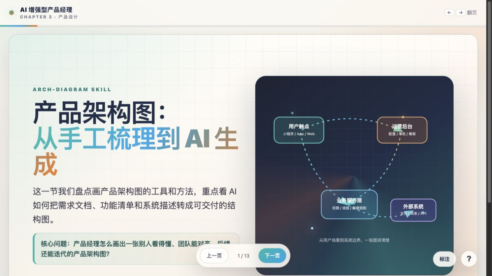
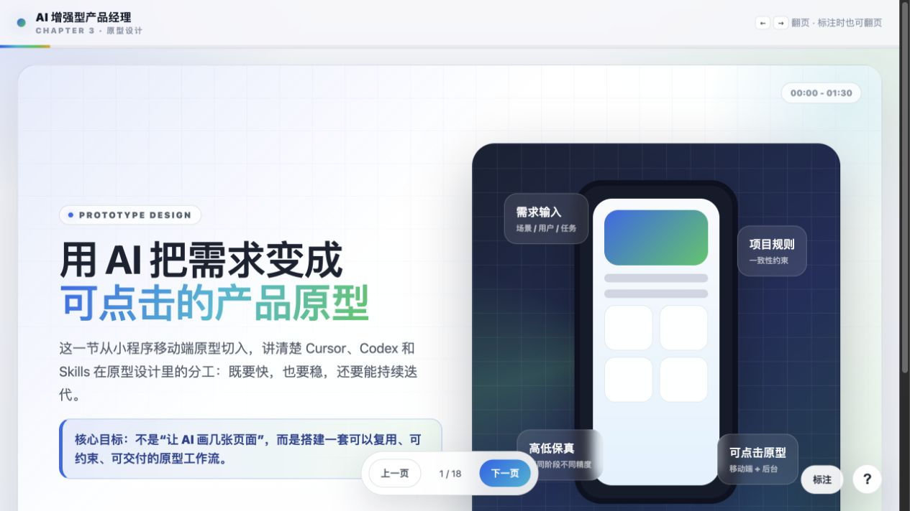
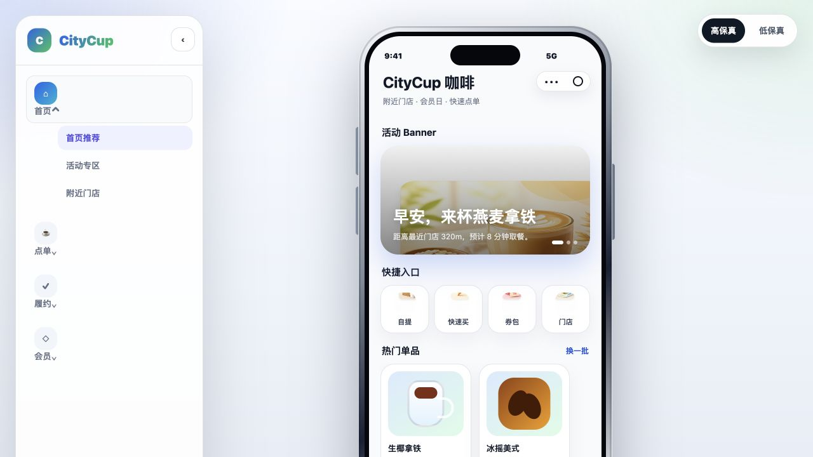
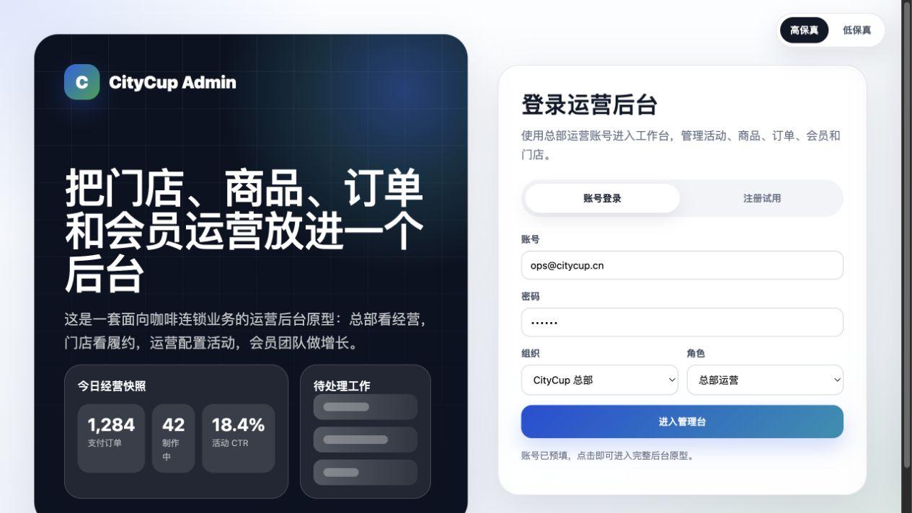
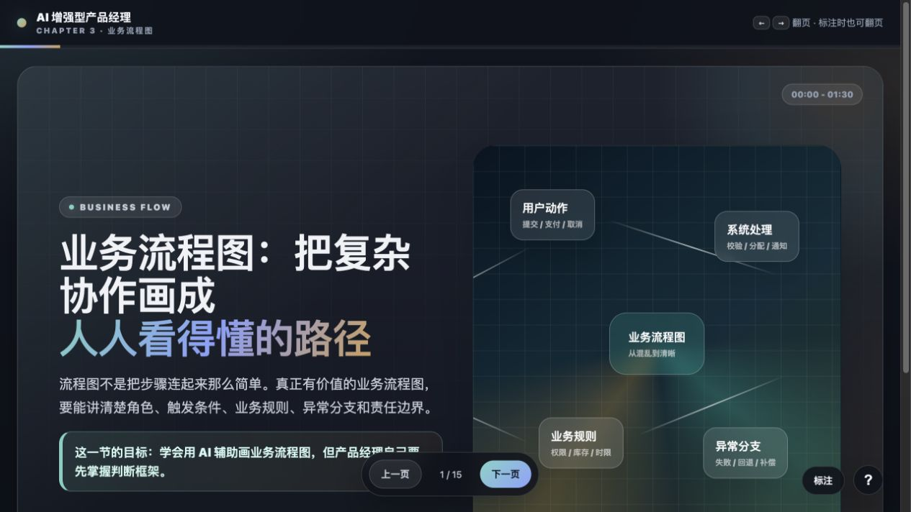
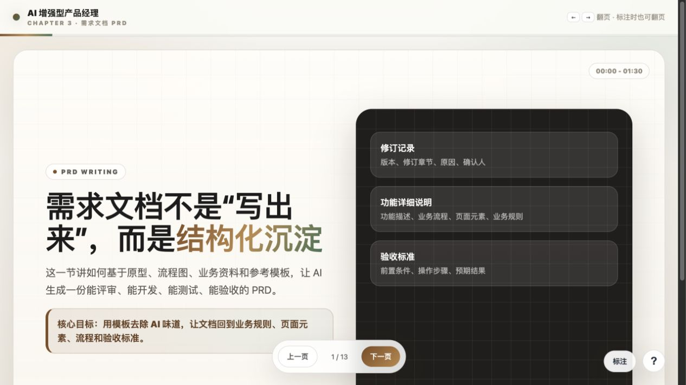
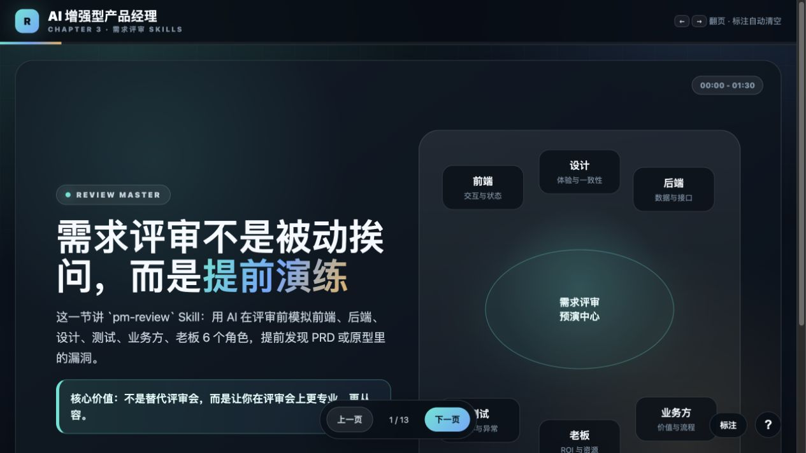

AI PRODUCT MANAGER COURSE
把 AI 放进产品经理真实工作流
从市场洞察、需求调研、原型设计、PRD、需求评审，到项目管理、运营复盘与 Vibe Coding。这里汇总了课程全部 HTML 课件和可交互 Demo。
32个课件入口
7个课程章节
1条完整工作流
00课程导览
先看课程定位和完整能力地图
01市场洞察
从资料、信号到业务判断
02需求调研
把声音、反馈和竞品动作变成需求
03产品设计
从架构、原型到完整需求文档
ARCH

产品架构图：工具与方法
从传统梳理到 AI 辅助，讲清层级、边界和表达方法。
→
PROTOTYPE

AI 原型设计方法课
用项目规则、提示词和验收清单保持高低保真原型一致性。
→
DEMO

小程序原型 Demo
可切换高低保真、页面导航和完整交互的移动端原型。
→
DEMO

后台运营原型 Demo
包含总览、商品、订单、会员、门店和抽屉详情的完整后台。
→
FLOW

业务流程图方法课
比较 Gemini、Mermaid 与在线泳道图工具的三种画法。
→
PRD

PRD 需求文档生成
从原型继续生成包含页面元素、业务规则和验收标准的完整 PRD。
→
REVIEW

需求评审大师 Skill
用多角色模拟提前发现疏漏，准备问题清单与现场应对口径。
→
04产品运营与管理
从命名、验收到复盘和向上沟通
05项目管理
从项目导师到进度、风险与沟通
06其他日常工作
把高频交付做成可复用能力
07新天地
认知、行动、项目与长期链接
没有找到匹配的课件，试试“PRD”“项目管理”或“Vibe Coding”。
课程资料不只在视频里
飞书知识库里还有安装指南、Skill、模板、案例与持续更新的资源链接。